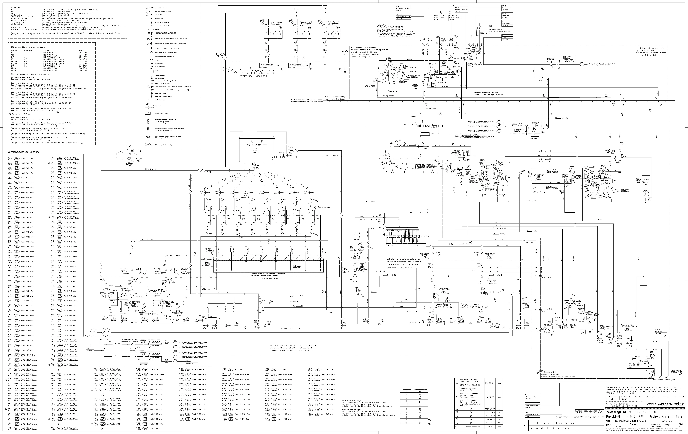

Modus aktiv: Tippe im Bild auf ein Ventil-Symbol, dann Namen eingeben. Nochmal Button tippen zum Beenden.

Zum Zoomen pinchen / mit zwei Fingern scrollen
📖 Handbuch
🤖 FSP Maintenance Agent
54260 · SFM5101 · Roche Kaiseraugst
Willkommen beim FSP Maintenance Agent
Ich kenne die Isolator-Anlage 54260 in- und auswendig: alle Ventile, CIP/SIP-Schritte, Weiterschaltbedingungen (Sollwerte für Druck/Temp/Zeit), Alarmcodes und das Handbuch. Frag mich was du wissen willst.